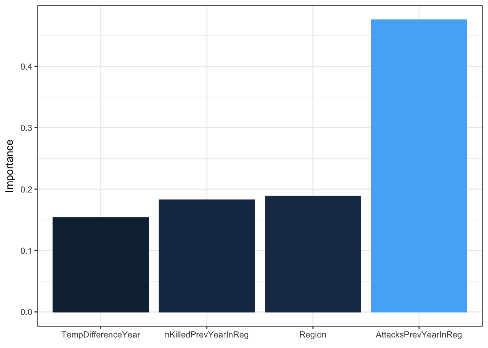

Extreme Weather and Terrorism
Bradley Druzinsky and Connor Ford
Our initial analysis concerns two datasets. The first is a Global Terrorism Database which has information on over 170,000 terrorist attacks since 1970. Each unit in the database is an attack and includes information on the time, location, tactics, perpetrators, and targets of said attack. From the source of the dataset, a ‘terrorist attack’ is: “The threatened or actual use of illegal force and violence by a non-state actor to attain a political, economic, religious, or social goal through fear, coercion, or intimidation.” (SMART at University of Maryland)
The second data set is a Berkeley Earth dataset which contains average monthly temperature for a particular location, (i.e. city, state, or country), with data going back to 1750.
Some important features (variables) in the terrorism and temperature data sets
Terrorism Set (https://www.kaggle.com/START-UMD/gtd/data)
- Event id
- Date
- Country
- City
- Latitude, Longitude
- Summary (of attack)
- Attack type (hostage, assassination, bombing, etc..)
- Weapon type
- Number killed
Temperature Set (https://www.kaggle.com/berkeleyearth/climate-change-earth-surface-temperature-data/data)
- Date
- Average Temperature (of day)
- City
- Country
- Latitude, Longitude
Lat/Long -> Clustered Regions
The function below takes a vector of Latitudes and a vector of Longitudes and runs Hartigan and Wong’s (1979) k-means clustering algorithm to cluster the latitude and longitudes into regions. This saves us the hassle of converting cities or lat/long coordinates to US states/territories. The function is also easily scalable for non-US lat/long coordinates.
cluster <- function(latVector, longVector) {
set.seed(4747) ## Set seed for reproducibility
lat_name <- "realLat" ## Name realLat column
long_name <- "realLong" ## Name realLong column
latlong <- data.frame(latVector, longVector) ## Initialize new data frame with lat and long params
names(latlong) <- c(lat_name, long_name) ## Apply names to frame
latlongCluster <- kmeans(latlong, centers = 20, nstart = 10) ## Run k-means clustering with centers centroids and nstart CV's
group_lat <- "GroupLat" ## Name GroupLat column
group_long <- "GroupLong" ## Name GroupLong column
latlongCenterData <- data.frame(latlongCluster$centers) ## Initialize data frame with centers
names(latlongCenterData) <- c(group_lat, group_long) ## Apply names to frame
latlongCenterData$clusterCenter <-
apply(latlongCenterData, 1, paste, collapse = ",") ## Combine latlongCenterData columns into a comma seperated value
group_name <- "GroupNumber" ## Name GroupNumber column
resultData <- data.frame(latlongCluster$cluster) ## Initialize data frame with kmeans clusters (region values)
names(resultData) <- c(group_name) ## Apply names to frame
resultData <- resultData %>%
mutate(LatLongCenter =
latlongCenterData$clusterCenter[GroupNumber]) ## Get the appropriate centroid location for each region number
resultData$cluster <-
apply(resultData, 1, paste, collapse = ",") ## Create a new column `cluster` columns collapsed together
return(resultData$cluster) ## Return the comma seperated cluster data as a vector
}Aggregating Master Data Set
The code chunk below cleans, merges, and computes the master data frame for terrorist and temperature data in the UNITED STATES.
## Get and clean only US terrorist attacks
usaTerrorismData <- terrorismData %>%
filter(country == 217) %>% ## Filter for country == USA
unite(date1, iyear,imonth,iday, sep="-") %>% ## Unite seperate year, month, and day columns into one (y-m-d)
mutate(dateLub = ymd(date1)) %>% ## Convert date into 'Lubridate' (YYYY-MM-DD)
filter(!is.na(dateLub)) %>% ## Filter out observations with missing dates (failed to parse)
mutate(city_char = str_to_lower(as.character(city))) %>% ## Create new city column as character type
mutate(month = month(as.POSIXlt(dateLub, format="%d/%m/%Y"))) %>% ## Create a new month column
mutate(year = year(as.POSIXlt(dateLub, format="%d/%m/%Y"))) %>% ## Create a new year column
mutate(month_year = paste(month, year)) ## Create new month, year column (M YYYY)## Warning: 33 failed to parse.## Uncomment to view head and dimension of cleaned usaTerrorismData
#head(usaTerrorismData)
#dim(usaTerrorismData)
## Get and clean only US temperatures
usaTemperatureData <- temperatureData %>%
filter(Country == "United States") %>% ## Filter for country == USA
mutate(dateLub = ymd(dt)) %>% ## Convert date into 'Lubridate' (YYYY-MM-DD)
filter(!is.na(dateLub)) %>% ## Filter out observations with missing dates (failed to parse)
filter(dateLub >= as.Date("1970-01-01")) %>% ## Filter only for data after 1/1/1970 (when Terrorism data begins)
mutate(city_char = str_to_lower(as.character(City))) %>% ## Create new city column as character type
mutate(month = month(as.POSIXlt(dateLub, format="%d/%m/%Y"))) %>% ## Create a new month column
mutate(year = year(as.POSIXlt(dateLub, format="%d/%m/%Y"))) %>% ## Create a new year column
mutate(month_year = paste(month, year)) %>% ## Create new month, year column (M YYYY)
mutate(AverageTemperature =
as.numeric(as.character(AverageTemperature))) %>% ## Type of AverageTemperature is numeric
filter(!is.na(AverageTemperature)) ## Remove observations with missing temperatures## Warning: 2 failed to parse.## Uncomment to view head and dimension of cleaned usaTemperatureData
#head(usaTemperatureData)
#dim(usaTemperatureData)
## Merge temperature data with terrorism data by city_char and month_year
## As a result, for every city we should also have every month since 1970 (exlcuding missing data)
## (Important note: There are ~200 unique cities in our temperature data and ~700 in our terrorism data.
## As a result, when merging on cities, we lose about half of our terrorist attacks.)
mergedTempTerrorismData <- left_join(usaTemperatureData, usaTerrorismData, by=c("city_char", "month_year"))
## Uncomment to view head and dimension of mergedTempTerrorismData
#head(mergedTempTerrorismData)
#dim(mergedTempTerrorismData)
## Clean mergedTempTerrorismData
mergedTempTerrorismData <- mergedTempTerrorismData[,c("month_year", "month.x", "year.x",
"city_char", "AverageTemperature",
"Latitude", "Longitude", "nkill",
"eventid")] %>% ## Select explanatory variables
filter(year.x < 2016) %>% ## Filter for a couple typos in years
mutate(isAttack = as.integer(!is.na(eventid))) %>% ## Create binary isAttack variable
mutate(nkill = ifelse(is.na(nkill), 0, nkill)) %>% ## Convert NA's to 0's in nkill
select(-eventid) %>% ## Remove eventid variable
mutate(realLong = -1* as.numeric(str_sub(Longitude, 1, -2))) %>% ## Parse Longitude column
mutate(realLat = as.numeric(str_sub(Latitude, 1, -2))) %>% ## Parse Latitude column
filter(!is.na(realLat)) %>% ## Remove missing Latitudes
filter(!is.na(realLong)) %>% ## Remove missing Longitudes
mutate(region = cluster(realLat, realLong)) %>% ## Get comma seperated region cluster (r,lat,long)
separate(region, sep=",", into=c("Region", "RegionLat", "RegionLong"), convert=TRUE) %>% ## Seperate comma-seperated data into the 3 columns
select(-Latitude, -Longitude) ## Remove Latitude and Longitude char vectors
## Create additional explanatory variables for mergedTempTerrorismData
mergedTempTerrorismData <- mergedTempTerrorismData %>%
group_by(Region, month.x) %>% ## Group by clustered Region and month
mutate(AvgTempReg = mean(AverageTemperature)) %>% ## Compute average temperature per month per region
mutate(TempDifference = abs(AvgTempReg - AverageTemperature)) ## Compute temperature diff b/w mean and actual
## Create additional explanatory variables for mergedTempTerrorismData
mergedTempTerrorismData <- mergedTempTerrorismData %>%
group_by(Region, year.x) %>% ## Group by clustered Region and year
mutate(AttacksInYearInReg = sum(isAttack)) %>% ## Sum the # of attacks in region in year
mutate(nKilledInYearInReg = sum(nkill)) %>% ## Sum the # of kills in region in year
group_by(Region) %>% ## Regroup by just Region
mutate(AvgAttacksPerYearInReg = mean(AttacksInYearInReg)) %>% ## Compute mean attacks per year in every region
mutate(AvgNKilledPerYearInReg = mean(nKilledInYearInReg)) %>% ## Compute mean # killed per year in every region
group_by(city_char) %>% ## Regroup by just city_char
mutate(AttacksPrevYearInReg =
ifelse(year.x == 1970, AvgAttacksPerYearInReg, lag(AttacksInYearInReg,12))) %>% ## Compute # of attacks in prev. year in region
mutate(nKilledPrevYearInReg =
ifelse(year.x == 1970, AvgNKilledPerYearInReg, lag(nKilledInYearInReg,12))) %>% ## Compute # killed in prev. year in region
ungroup(city_char) ## Ungroup city_char grouping
## Uncomment to view head, dimension, and random sampling of cleaned mergedTempTerrorismData
#head(mergedTempTerrorismData,10)
#dim(mergedTempTerrorismData)
#mergedTempTerrorismData[sample(nrow(mergedTempTerrorismData), 10),]Now we must clean our master data for a neural network. This includes filtering out insignificant or unnecessary variables (both categorical and some numerical). We must also check to make sure our data frame contains no missing (na) values.
## First check to make sure we do not have any missing values in our data frame.
## Uncomment below to run and display the check.
#apply(mergedTempTerrorismData,2,function(x) sum(is.na(x)))
nnData <- mergedTempTerrorismData %>%
select(month.x, isAttack, Region, TempDifference,
AttacksPrevYearInReg, nKilledPrevYearInReg) ## Select explanatory variables
## Uncomment to view head and dimension of nnData
#head(nnData,10)
#dim(nnData)Neural network model:
set.seed(4747) ## Set seed for neural net reproducibility
max = apply(nnData, 2, max) ## Get max of data
min = apply(nnData, 2, min) ## Get min of data
scaledData = as.data.frame(scale(nnData, center=min, scale=max-min)) ## scale data from min to max
sampleSize = 0.05 * nrow(scaledData) ## Sample from 2/3 of the observations
index = sample(seq_len(nrow(scaledData)), size=sampleSize) ## Compute index sample
trainNNData <- scaledData[index,] ## Get training set
testNNData <- scaledData[-index,] ## Get test set
neuralNet <-neuralnet(isAttack~month.x+Region+TempDifference+
AttacksPrevYearInReg+nKilledPrevYearInReg,
trainNNData, hidden=3, linear.output=TRUE) ## Fit neural network on data
plot(neuralNet) ## Plot the neural network
plot.nnet(neuralNet, cex.val = 0.5) ## Plot the neural network with a nicer libraryAssess the neural network:
predictTestNN <- compute(neuralNet, testNNData[c("month.x", "Region",
"TempDifference",
"AttacksPrevYearInReg",
"nKilledPrevYearInReg")]) ## Compute test results in the neural net
results <- data.frame(actual=testNNData$isAttack,
prediction=predictTestNN$net.result)
head(results) ## Display head of results in a data frame## actual prediction
## 1 0 0.01513790190
## 2 0 0.01208049433
## 3 0 0.01904329853
## 4 0 0.01217266339
## 5 0 0.01255871812
## 6 0 0.01231850571roundedresults<-sapply(results,round,digits=0)
roundedresultsdf<-data.frame(roundedresults)
attach(roundedresultsdf)## The following objects are masked from roundedresultsdf (pos = 3):
##
## actual, prediction## The following objects are masked from roundedresultsdf (pos = 4):
##
## actual, predictiontable(actual, prediction) ## Table of predictions v actual## prediction
## actual 0
## 0 139231
## 1 1195results %>%
group_by(actual) %>%
summarise(mean(prediction)) ## Compute average probability predication for an attack vs non-attack## # A tibble: 2 x 2
## actual `mean(prediction)`
## <dbl> <dbl>
## 1 0 0.007997439193
## 2 1 0.013216557007garson(neuralNet) ## Plot variable importance
That did alright, but now let’s try to predict whether a terrorist attack is going to happen in a given year, rather than a given day in a region. This is going to require a bit of data re-wrangling to get the appropriate explanatory variables.
# want additional isAttackYear, TempDifferenceYear
mergedTempTerrorismDataYear <- mergedTempTerrorismData %>%
group_by(Region, year.x) %>% ## Group by Region and year.x
mutate(isAttackYear = ifelse(sum(isAttack) > 0, 1, 0)) %>% ## Create isAttackYear var, was there an attack in year in reg?
mutate(AvgTempRegYear = mean(AverageTemperature)) %>% ## Create AvgTempRegYear var, avg temp in reg in year
group_by(Region) %>% ## Regroup by just Region
mutate(HistAvgTemp = mean(AverageTemperature)) %>% ## Compute HistAvgTemp per region over all years
group_by(Region, year.x) %>% ## Regroup by Region and year.x
mutate(TempDifferenceYear = abs(HistAvgTemp - AvgTempRegYear)) %>% ## Compute the difference in temp between year and hist avg
ungroup(Region, year.x) ## Ungroup all groupings
## Uncomment to view head and dimension of mergedTempTerrorismDataYear
#head(mergedTempTerrorismDataYear,20)
#dim(mergedTempTerrorismDataYear)Again we must clean our data for the neural net;
## First check to make sure we do not have any missing values in our data frame.
## Uncomment below to run and display the check.
#apply(mergedTempTerrorismDataYear,2,function(x) sum(is.na(x)))
nnDataYear <- mergedTempTerrorismDataYear %>%
select(year.x, isAttackYear, Region, TempDifferenceYear,
AttacksPrevYearInReg, nKilledPrevYearInReg) ## Select explanatory variables
nnDataYear <- nnDataYear %>%
group_by(Region, year.x) %>%
summarise_all(funs(mean))
## Uncomment to view head and dimension of nnData
#head(nnDataYear,10)
#dim(nnDataYear)Again, we are going to train another neural net model
set.seed(4747) ## Set seed for neural net reproducibility
max = apply(nnDataYear, 2, max) ## Get max of data
min = apply(nnDataYear, 2, min) ## Get min of data
scaledDataYear = as.data.frame(scale(nnDataYear, center=min, scale=max-min)) ## scale data from min to max
sampleSize = 0.67 * nrow(scaledDataYear) ## Sample from 2/3 of the observations
index = sample(seq_len(nrow(scaledDataYear)), size=sampleSize) ## Compute index sample
trainNNDataYear <- scaledDataYear[index,] ## Get training set
testNNDataYear <- scaledDataYear[-index,] ## Get test set
neuralNetYear <-neuralnet(isAttackYear~Region+TempDifferenceYear+
AttacksPrevYearInReg+nKilledPrevYearInReg,
trainNNDataYear, hidden=3, linear.output=TRUE) ## Fit neural network on data
plot(neuralNetYear) ## Plot the neural network
plot.nnet(neuralNetYear, cex.val = 0.5) ## Plot the neural network with a nicer libraryAssess the new neural network on year:
predictTestNNYear <- compute(neuralNetYear, testNNDataYear[c("Region",
"TempDifferenceYear",
"AttacksPrevYearInReg",
"nKilledPrevYearInReg")]) ## Compute test results in the neural net
resultsYear <- data.frame(actual=testNNDataYear$isAttackYear,
prediction=predictTestNNYear$net.result)
head(resultsYear ) ## Display head of results in a data frame## actual prediction
## 4 0 0.1634625156
## 5 0 0.1635298512
## 6 1 0.1634625156
## 9 0 0.1634725187
## 11 1 0.1634722189
## 12 1 0.2303895829roundedresults<-sapply(resultsYear,round,digits=0)
roundedresultsdf<-data.frame(roundedresults)
attach(roundedresultsdf)## The following objects are masked from roundedresultsdf (pos = 3):
##
## actual, prediction## The following objects are masked from roundedresultsdf (pos = 4):
##
## actual, prediction## The following objects are masked from roundedresultsdf (pos = 5):
##
## actual, predictiontable(actual, prediction) ## Table of predictions v actual## prediction
## actual 0 1
## 0 139 31
## 1 71 50resultsYear %>%
group_by(actual) %>%
summarise(mean(prediction)) ## Compute average probability predication for an attack vs non-attack## # A tibble: 2 x 2
## actual `mean(prediction)`
## <dbl> <dbl>
## 1 0 0.3649511678
## 2 1 0.4981493106garson(neuralNetYear) ## Plot variable importance
Here we will create some visualizations
deathViz <- usaTerrorismData %>% # Create dataset to visualize
filter(provstate != "Puerto Rico") %>% # Remove Puerto Rico
filter(provstate != "Alaska") %>% # Remove Alaska
filter(provstate != "Hawaii") %>% # Remove Hawaii
filter(longitude < 0) %>% # Remove Locations East of Prime Meridien
filter(!is.na(nkill)) # Get rid of NA's
deathViz <- deathViz %>%
group_by(provstate) %>% # Group by state
summarize(totalKilled = sum(nkill)) %>% # Sum number of deaths
mutate(code = state.abb[match(provstate,state.name)]) # Add state abbreviations
deathViz$hover <- with(deathViz,
paste(provstate, '<br>', "Number Killed", totalKilled)) # Create a Variable # for hovering
l <- list(color = toRGB("white"), width = 2) # give state boundaries a white border
g <- list( # specify some map projection/options
scope = 'usa',
projection = list(type = 'albers usa'),
showlakes = TRUE,
lakecolor = toRGB('white')
)
p1 <- plot_geo(deathViz, locationmode = 'USA-states') %>%
add_trace(
z = ~ totalKilled, text = ~hover, locations = ~code,
color = ~totalKilled, colors = 'Reds'
) %>%
colorbar(title = "Deaths") %>%
layout(
title = 'Deaths From Terrorist Attacks Since 1970',
geo = g
)
p1deathVizNoNy <- usaTerrorismData %>% # Create dataset to visualize
filter(provstate != "Puerto Rico") %>% # Remove Puerto Rico
filter(provstate != "Alaska") %>% # Remove Alaska
filter(provstate != "New York") %>% # Remove New York
filter(provstate != "Hawaii") %>% # Remove Hawaii
filter(longitude < 0) %>% # Remove Locations East of Prime Meridien
filter(!is.na(nkill)) # Get rid of NA's
deathVizNoNy <- deathVizNoNy %>%
group_by(provstate) %>% # Group by state
summarize(totalKilled = sum(nkill)) %>% # Sum number of deaths
mutate(code = state.abb[match(provstate,state.name)]) # Add state abbreviations
deathVizNoNy$hover <- with(deathVizNoNy,
paste(provstate, '<br>', "Number Killed", totalKilled)) # Create a Variable # for hovering
p2 <- plot_geo(deathVizNoNy, locationmode = 'USA-states') %>%
add_trace(
z = ~ totalKilled, text = ~hover, locations = ~code,
color = ~totalKilled, colors = 'Reds'
) %>%
colorbar(title = "Deaths") %>%
layout(
title = 'Deaths From Terrorist Attacks Since 1970 Excluding New York',
geo = g
)
p2Now we will make an even more interactive visualization
interactiveViz <- usaTerrorismData %>% # Create dataset to visualize
filter(provstate != "Puerto Rico") %>% # Remove Puerto Rico
filter(provstate != "Alaska") %>% # Remove Alaska
filter(provstate != "Hawaii") %>% # Remove Hawaii
filter(longitude < 0) %>% # Remove Locations East of Prime Meridien
filter(!is.na(nkill)) # Get rid of NA's
interactiveViz <- interactiveViz %>%
group_by(provstate, year, latitude, longitude) %>% # group attacks by year, state, lat, and long
summarize(totalKilled = sum(nkill)) # sum the number of deaths from terrorist attacks
# set up the user interace for visualization
ui <- bootstrapPage(
tags$style(type = "text/css", "html, body {width:100%;height:100%}"),
leafletOutput("map", width = "100%", height = "100%"),
absolutePanel(top = 10, right = 10,
sliderInput("range", "Deaths", min(interactiveViz$year), max(interactiveViz$year),
value = range(interactiveViz$year), step = 1
),
selectInput("colors", "Color Scheme",
rownames(subset(brewer.pal.info, category %in% c("seq", "div")))
),
checkboxInput("legend", "Show legend", TRUE)
)
)
# function to create interactive map
server <- function(input, output, session) {
# Reactive expression for the data subsetted to what the user selected
filteredData <- reactive({
interactiveViz[interactiveViz$year >=
input$range[1] & interactiveViz$year <= input$range[2],]
})
# This reactive expression represents the palette function,
# which changes as the user makes selections in UI.
colorpal <- reactive({
colorNumeric(input$colors, interactiveViz$totalKilled)
})
output$map <- renderLeaflet({
# Use leaflet() here, and only include aspects of the map that
# won't need to change dynamically (at least, not unless the
# entire map is being torn down and recreated).
leaflet(interactiveViz) %>% addTiles() %>%
fitBounds(~min(longitude), ~min(latitude), ~max(longitude), ~max(latitude))
})
# Incremental changes to the map (in this case, replacing the
# circles when a new color is chosen) should be performed in
# an observer. Each independent set of things that can change
# should be managed in its own observer.
observe({
pal <- colorpal()
leafletProxy("map", data = filteredData()) %>%
clearShapes() %>%
addCircles(radius = ~((50*(totalKilled + 1)) + 5), weight = 1, color = "#777777",
fillColor = ~pal(totalKilled), fillOpacity = 0.7, popup = ~paste(totalKilled)
)
})
# Use a separate observer to recreate the legend as needed.
observe({
proxy <- leafletProxy("map", data = interactiveViz)
# Remove any existing legend, and only if the legend is
# enabled, create a new one.
proxy %>% clearControls()
if (input$legend) {
pal <- colorpal()
proxy %>% addLegend(position = "bottomright",
pal = pal, values = ~totalKilled
)
}
})
}
shinyApp(ui, server)